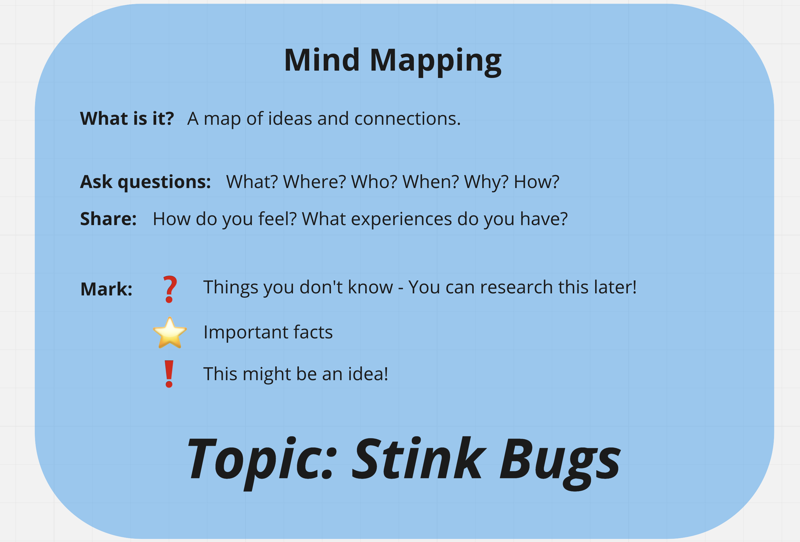

Class 1: Unit & Class Introduction
Five students joined the first class over Zoom.
Prior to starting the class, I wasn't at all sure that any students would show up. I had sent out an email to all of the students and also a message through our Discord server, but had received no responses from students. Thus, I was pleasantly surprised to have five students present for the first class. They did trickle in over the first 20 minutes, so we did not begin immediately, as I wasn't sure there would be enough students for the class. For the first 20 minutes, we chatted about packaging engineering, my undergraduate major. When it was clear that I would have enough students to teach the class, I immediately began teaching the unit.
After introducing the class (why I was teaching the class and what we would be doing), we moved straight into the first formative assessment: mind mapping the topic of stink bugs. After the initial mind mapping, I introduced the problem scenario and the project to the students. Following this, students returned to their mind maps to add more and to annotate their mind maps based on what they thought might be worth researching more or might be important information for their project.



I was mostly pleased with the students' work on the mind maps. Most of them had some good thoughts laid out on their mind maps, along with their own feelings toward stink bugs. Unfortunately, one student (M) apparently spent about 10 or 15
minutes hearing "bags" instead of "bugs." His mind map is less focused, although not unexpected with his personality.
Because the number of students was small and the class was mixed with both first-year and second-year students, I decided to allow students to choose whether they wanted to work individually or not.
Three students (C, S, SH) decided to work individually for this project, while two (R, M) paired up as a team.
We then moved into research. As students began their research, the driving questions were displayed on the shared PowerPoint to help students guide their research and thinking. After about 15 minutes of research, students shared 1-3 things they
had learned from their research thus far. Every student, except M, was able to share a bit and students were then directed back to their mind maps to add what they had learned.
With a bit of research done, students then worked on writing questions for K, our guest expert, who would join us for our next class. K is a member of the maintenance team at the school, as well as a rice farmer in the local area. Each student
wrote two questions and questions were written in Japanese as K does not speak English. Because one of the first-year students is an international student whose first language is not Japanese, he wrote his questions in English and one of the
second-year students helped him translate them to Japanese. Most of the students wrote very good questions about stink bugs, other pests, and methods to deal with pests. M chose to ask about the possibility of eating stink bugs.

Class was concluded after students finished preparing questions for K. When asked if they would continue coming to the class, all the students said yes.
Reflection: Class 1
I was very pleased and surprised to have students in the class, much less five students.
I was concerned that S, being located overseas and not in Japan, might be unfamiliar with stink bugs. If that were the case, I was prepared to allow S to instead investigate a different pest of his choice that is local to his area. However, he assured me that they do have stink bugs where he lives, so we proceeded with everyone on the same topic.
M was not very focused and had to ask me to repeat instructions a few times, after his classmates were already working. This could've been due to the online class environment, his own lack of attention, his personality traits, etc. I did not
put full instructions on my shared PowerPoint, instead choosing to put reminders of things students might think about while working. There were instructions in the Miro whiteboard for the mind mapping activity. In the future, I will try adding explicit instructions to the shared PowerPoint to be displayed as students work, in addition to the thinking reminders. Perhaps, with this, even if a student misses the initial instructions, they can still know what's going on.
The questions prepared for our expert were done in Google Docs, since the class was online. This also allowed me to print out all of the questions to give to K early, which was good because he seemed very nervous and worried about speaking to the students and being able to answer their questions.
We started the class a bit late due to waiting for students to arrive and the discussion we started while students were arriving. However, we still ended the class a bit early. At this point, I'm not very good at estimating the amount of time activities should/will take. Perhaps, the online format of the class also affects the amount of time taken because impromptu discussion among students is discouraged with the online format.
Although all the students said they would come to the class next week, it will take place during first period, so the likelihood of students not showing up will increase.
Class 2: Research & Investigation
Two second-year students, C and R, and one first-year student, S, came to the class.
As expected, fewer students attended the first period class. However, having only lost two students, I considered three students to be a good number. We did start a bit late to see if anyone else would show.
Up to this point, when I spoke to K about his speaking to the students in my class, he had been unsure and nervous about it. He'd also expressed that he wasn't sure he could even talk for 10 minutes about the topic. I assured him it was fine and that he could also talk about agriculture in the local area in general and about other pests or problems the farmers might encounter.
K showed up half an hour early that morning.
We began the class on the second day by reviewing the problem scenario and project. We also reviewed the driving questions before moving on the K's presentation. I had given him the list of questions from the students in advance so that he could prepare and he worked the information into his presentation. His presentation covered local agriculture, growing rice, stink bugs, and other pests. It was very well done and the students seemed interested. The presentation took well over half an hour and was given in Japanese.
K's presentation was much longer than I had expected, but contained a lot of good information. R took a lot of notes and I was quite happy to see this.
S said he had difficulty understanding the presentation, understandable as it was in Japanese, but asked a very good question at the end about the stink bugs' natural predators. (The stink bugs' natural predators are dragonflies and sparrows. There were a lot of dragonflies around at this time.) We made sure S had a copy of the PowerPoint and offered to answer any questions he might have on the presentation.
After K's presentation, the students went around the school to investigate. They spoke to faculty and staff about their experiences with stink bugs around the campus. Since S was online, another teacher took the laptop around so that he could speak to different teachers.
As the students returned to the classroom, they added to their mind maps once again. The students did not all return at the same time, so as they did, they updated their mind maps and began brainstorming. Following brainstorming, students moved on to beginning to work on designing their solutions. R and C utilized the small whiteboards available in the classroom.


At the end of class, students filled out a short version of the daily check-in. Daily check-in questions were as follows:
- What is one thing you learned today?
- How do you feel about today's class?
- Any other comments, questions, or suggestions?

Before he left the class, S asked about sprays to remove the stink bug odor from clothes. I suggested that next time, we look into this line of inquiry because there are certainly sprays to remove bad odors in general, but we may need to do additional research or some experimenting to see if they work on the stink bug odor.
Reflection: Class 2
My timings for the second class were off again. K's presentation took much longer than expected and when the students had good momentum while interviewing teachers about stink bugs, I also extended that period of time so that they could speak to more teachers. So, in the end, we had less time for brainstorming and designing, but there will be time to do so in the next class as well. Flexibility is important as a teacher!
Since the activities today were primarily predetermined/teacher-decided and we barely started the brainstorming/designing process, I shortened the daily check-in to just a few questions. For the students attending in-person, they could also request snacks on the reflection.
S's question at the end of class was a good direction for inquiry, so we can discuss it next time and also discuss some chemistry.
Class 3: Brainstorming & Designing
Two students came to class: one second-year student, C, and one first-year student, S.
We lost another student and were down to two students. But based on these two students' personalities, I was optimistic that they would continue through to the end of the class.
We reviewed the project and problem scenario once again and then moved straight into brainstorming and designing. The students shared what research or ideas they had so far:
- C shared what she had learned about the seasons when stink bugs are active and where stink bugs tend to live. C also shared what stink bugs like or dislike.
- S was thinking about a spray to remove the stink bug odor from clothing.
S had many questions about deodorizers, so we discussed how deodorizers worked. We looked at the active ingredient in most common deodorizers and talked about how the cyclodextrin molecules bind to the odor molecules. This also led to a mini-lesson on prefixes and suffixes to explain the terms "hydrophilic" and "hydrophobic." After establishing how deodorizers work, S moved on to try to figure out the components of the chemical that stink bugs excrete to release their odor. It was also suggested that S look at natural deodorizers as well, such as lemon juice and peppermint extract.


C's research showed that stink bugs dislike lavender and menthol, so she decided to make a spray to deter stink bugs using herbs. The spray would be sprayed around windowsills. C wanted to use lavender, mint, and menthol. This prompted an inquiry into the difference between mint and menthol.
We translated English to Japanese and back to English with both "mint" and "menthol."
- Mint > ハッカ > Mentha
- Menthol > ハッカ > Mentha


S's further research on stink bugs revealed that there is a parasitic wasp in Japan that is a natural predator to stink bugs. Conversation also prompted some discussion on methods used in S's country to ward off mosquitoes, particularly that of burning horse dung.
Finally, the class ended with students filling out a daily check-in again. This time, they filled out the full version.


Reflection: Class 3
Today was more of an independent work day, so I didn't have to worry about the timing as much.
We were able to investigate quite a few different inquiries prompted by the students' research and design plans. These inquiries were fun and allowed students and teachers to work together to investigate. The atmosphere created by everyone learning together was quite positive and enjoyable. This is the sort of learning I'd like to encourage: where everyone works together to learn from an inquiry prompted by their project.
The class is now behind schedule, according to the original timeline, but I think that it's fine. With only two students, some of the activities should be finished in a shorter amount of time as well. Materials requests were pushed to today, so I'll get materials after work tonight for prototyping tomorrow morning. WIth just two students, I think there will be enough time for prototyping and peer review.
Students have continued to respond positively on the daily check-ins. I'm really glad they're enjoying the class. I have also really enjoyed our discussions as well.
Class 4: Prototyping & Peer Review
S and C came to class and we began again by reviewing the project and activities for the day. Once again, we moved into an independent work time focusing on finishing solution designs and prototyping.
To create the prototype, C used 100% organic peppermint oil, 100% organic lavender oil, and a 12 milliliter spray bottle. C originally wanted to use only oil in her spray, but after some discussion on properties of oil, as well as prices of essential oils, she decided to try using water as a base first to minimize the amount of oil required.
S decided to change his solution from focusing on removing stink bug odor to also deterring stink bugs using smells. He decided to use aroma diffusers with lavender oil because his research showed that stink bugs don't like lavender oil.
I wondered if S decided to change his original direction because his idea still needed a bit more research (into the chemicals used in odor eliminators and the chemical components in stink bug odor) and because C's idea seemed to be going so smoothly. C was ahead of S in the research-brainstorm-design-prototype process and was very clear on what she wanted to do, but she is also a year above S and has had more experience with this process in the Engineering Design class. But S's new idea is not the same as C's (although for the same purpose) and his research is also slightly different.
After both students were set with their solutions, we moved onto the peer review. Before beginning the peer review, we discussed the term "peers," what good feedback is, and how to respond to feedback. As a framework, 3CQ (Compliment, Comment, Connect, & Question) was introduced. However, the peer review sheet provided to the students also had specific questions to prompt them.

With only two students, two other teachers were also invited to join the peer review for a total of five participants: two students and three teachers. To create a more equal, comfortable, discussion-friendly setting, desks were arranged in a circle (with one desk for our online student's computer presence). S completed the peer review sheet for C through Google Forms.
During the peer review process, S decided that he wanted to use both lavender oil and neem oil in his aroma diffusers, but then a few minutes later decided not to use neem oil after being asked what it smelled like and Googling it. In the end, he decided to use only lavender oil.


Time was set aside after the peer review for students to make changes to their solutions and work on iterations, but both were happy with their feedback and solutions and so decided not to make any changes.
We previewed the presentation requirements and guidelines, but with 20 minutes left in the classtime, it was decided that we would begin presentation preparation at the beginning of the next class instead.
Students once again filled out the daily check-in and that concluded the fourth class.


Reflection: Class 4
At this point, the pacing for the class is going well. Next class will focus on presentation preparation and writing the instructions for the solutions. The final class will be last-minute preparation and presentations.
Both students have designed solutions with research to back up their design decisions. I was a little concerned with S's change of solution and wondered at the influence from C's progress in the class, but in the end, it's not the same solution and he seems excited about his solution and has the research to back it up.
Peer review also went relatively well, besides my miscalculation of how many peer review sheets were needed. More of the constructive or thought-provoking questions came from the teachers, rather than the students. However, both students participated fully in sharing, discussion, and providing feedback. They both also learned some new things from each other's sharing.
Class 5: Presentation Preparation & Writing Instructions
As usual, the class began with reviewing the problem scenario, project, and the planned activities for the day. Both C and S were present. The fifth day was divided into two parts. The first half of the class would focus on presentation preparation, while the second half of the class would focus on writing instructions for their solutions.
We had previewed the presentation requirements and guidelines at the end of the last class, but now reviewed them once more in more detail. Students were encouraged to choose their own manner of presentation.
Since C had created a sample of her solution, she was encouraged to create a label as well. As she worked on it, we discussed what information is included on labels and packaging. We looked at a few real-world examples that she could model her own label after.

During the presentation prep time, S also shared about a podcast he had listened to. The podcast was about stink bugs and he learned about stink bugs as an invasive species and about some population growth control methods that different countries are using. As "invasive species" was a new term to him, we discussed what an "invasive species" is, some effects of invasive species, and countermeasures, with specific examples of each.

Our discussion on invasive species touched on the general negative effects of invasive species, specific examples, and countermeasures. However, I missed the opportunity to discuss the effects of invasive species on ecosystems as a whole. I realized this after the class had ended and was quite disappointed.
During the second half of the class, we worked on written instructions. To begin, we discussed the type of writing used in process writing: second-person POV, active voice, etc. An example was provided to the students and they were directed to write their instructions as a numbered list. C wrote hers by hand on the provided worksheet, while S wrote his in a Google Doc. Both students wrote their instructions and then had their English checked.


Continuing on, we discussed transition words used in process writing and both students were provided with a list of transition words they could reference. We then moved onto turning their numbered steps into a paragraph with the use of transition words. After checking their English, their written instructions were complete.


The class finished with the daily check-in again.


Reflection: Class 5
Today went very smoothly. We covered everything that was planned. I haven't seen either student's presentation yet, but both seem quite confident. When asked, both students said they didn't need more time to work on the presentations during the next class, before presenting. I will still leave some time at the beginning of the next class for any last-minute preparation.
Both students also wrote their instructions well and asked for English checks without prompting. [English checks are a normal activity at our school. They involve a student receiving editing and revision on their writing in the form of a discussion with a teacher. The teacher and student work together to make the writing better in an interactive process that allows the student an opportunity to learn from their own mistakes.]
I did consult an English teacher when preparing this part of the unit, so that the students would have the chance to practice and demonstrate good writing skills.
Neither student had any particular teachers they wanted to invite, so the invitation to the presentations will be extended to all the faculty and staff at this campus.
Class 6: Final Presentations
Arriving to the class on the final day, the students immediately began working on their presentations, finishing up last-minute preparation. C had created her label for her sample, so it needed to be printed and attached to the sample. Both students needed English checks for their presentations. Both had chosen to use PowerPoint as their presentation medium.
I was very glad that I decided to schedule the presentations later in the class and made sure that the students would have time for last-minute preparation.
Presentations were scheduled to begin 45 minutes into the class. Teachers and staff started arriving at our classroom 15 minutes early, as the students were finishing their preparation. Presentations began at 11:15 AM. We had at least a dozen faculty and staff attend the presentations. Even the school president joined over Zoom from the other campus.
I was very nervous as teachers and staff began to arrive. I was even more nervous knowing that the school president would be attending as well. Since I don't teach a normal content class at this school, I often feel like I have to fight to prove that I am also a teacher. So knowing that the school's teachers and president would be coming to watch my students present on what they had learned and done in my class was quite anxiety-inducing.
C presented first, using PowerPoint to present what she had learned and her proposed solution. She showed off the sample of the spray that she'd created and it was passed around the room. Some teachers even sprayed it on themselves experimentally to see how it smelled. After her presentation, some questions were asked about the use of the spray, any negative effects from using the spray for a long time, and the cost of the spray.

S presented next, also using PowerPoint and sharing it through the Zoom. He presented his solution of using aroma diffusers with lavender oil. Teachers also asked him questions, about the choice of lavender oil and whether brewing peppermint tea all day might be an alternative to aroma diffusers.
Both students presented very well and the question-and-answer sessions after each presentation led to lively discussion among the students, teachers, and staff about the proposed solutions and other possible solutions to the stink bug situation. The school president even asked if anyone had considered cooking stink bugs as an alternative to just getting rid of them.
After the presentation session concluded, the students filled out a final reflection to finish out the class.
Reflection: Class 6
I felt that the presentation session went very well. I received some comments from other teachers afterwards complimenting the presentation session and saying that they enjoyed it. One said that I had done a good job leading the presentation session. I was quite nervous throughout the session and even forgot to share some information about the class at the beginning, but was able to slip it in later on. I had thought it was quite smoothly done and a teacher confirmed that he hadn't noticed anything out of place or odd at all.
Unforunately, I completely forgot to request that the Zoom call was recorded.
I think next time I invite faculty and staff to a presentation session in a class, I'd rather have them wait outside as preparation finishes and then let them all in the classroom at once, rather than having them trickle in over time.
I am quite proud of how C and S did, creating and presenting their solutions. I am also quite relieved that both of them enjoyed the class.
Both students described me as a "helpful" teacher in their final reflections.
Post-Implementation Reflection
This is the STEAM unit that I've been writing throughout the Teaching and Learning program. I wrote it specifically for these students at this time of year. The possibility of not being able to teach the class at all was very frustrating and rather disappointing. So I'm glad I was able to teach the class in its entirety even if there were only two students in the end. I was honestly really surprised that five students showed up to the first class. I didn't expect that at all.
I was also worried that the students wouldn't enjoy the unit. Even though I had written the unit specifically for them with the aim of choosing a topic they could easily engage with, I was still worried that they might find it too childish or might not enjoy it. Reading their positive reactions on the daily check-ins was really uplifting and encouraging.
I designed the unit with the intentional potential for all elements of STEAM to emerge naturally through the problem scenario and project. I do think that science, technology, engineering, and arts were integrated well and came up many times throughout the class. However, math did not come up as much as I had hoped. Math came up only a few times in the discussion of population growth of stink bugs in previous countries and in the discussion of costs and volume of C's spray. I had been hoping that if stink bugs were present on campus during this time, we might do some population estimates of the stink bugs here and also test for and calculate the effectiveness of the students' solutions. Next time, I will try to plan more concrete, executable opportunities to work in math.
I also have much to learn about timing and planning for flexibility. Plans are great, but it is so easy for plans to be thrown askew. So flexible planning is even more important. I think that, with more experience, I will have a better handle on estimating the amounts of time needed for various activities.
One of my favorite parts of teaching this class was the conversations and discussions with the students as we learned together and investigated different inquiries prompted by their research.